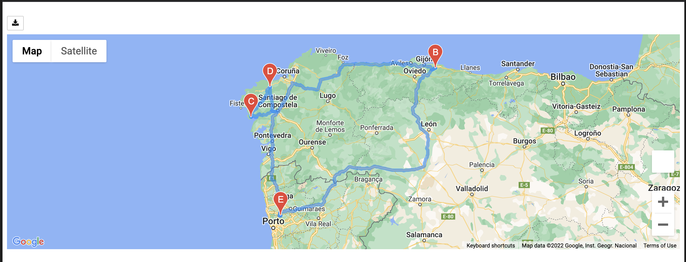

Challenge
Table of Contents
Traveling the World with APIs
Objective
In this project we had the task to find a good vacation itinerary without any idea or preferences for destinations. It was a sort of “spin the globe and we go where it stops”, except that we had the power of Python and APIs on our side.
Results
Our final result is an itinerary around Portugal with all the Weather and coordinates data.

We manually chose out locations once we were able to have a better view of the whole map and the Hotels available.
Summary
The steps were the following:
- Spin the globe, so to speak, and generate 2000 random locations using longitude and latitude.
- Localize the closest city to each of those coordinates and ask OpenWeather at https://openweathermap.org/api for the current weather and overall description, then filter results to fit our desired temperature ranges.
- Use the Google API to find the nearest hotel to each city’s coordinates according to our requirements, then visualize the possible locations in a map.
- Finally map out an itinerary and a route by finding four cities that are close to each other.
This is an example of chosing the cities manually.
import pandas as pd vacation_df = pd.read_csv("Vacation_Search/WeatherPy_vacation.csv") vacation_start = vacation_df.loc[vacation_df["City"] == "Santo Tirso"] vacation_end = vacation_df.loc[vacation_df["City"] == "Santo Tirso"] vacation_stop1 = vacation_df.loc[vacation_df["City"] == "Villaviciosa"] vacation_stop2 = vacation_df.loc[vacation_df["City"] == "Muros"] vacation_stop3 = vacation_df.loc[vacation_df["City"] == "Carballo"] start = vacation_start.to_numpy()[0][5:7] end = vacation_end.to_numpy()[0][5:7] stop1 = vacation_stop1.to_numpy()[0][5:7] stop2 = vacation_stop2.to_numpy()[0][5:7] stop3 = vacation_stop3.to_numpy()[0][5:7] print(vacation_start["Hotel Name"].str.replace("Santo Tirso", ""))
9 Cidnay - Charming Hotel & Executive Center Name: Hotel Name, dtype: object
Our vacation starts and ends in Santo Tirso at the Cidnay Hotal & Executive Center. And we have a few stops in between.
There were other options we were interested in but we ended up chosing Portugal as it had many cities that matched our requirements.
Conclusion
It is really easy to request data from companies that provide an API for it, specially using Python libraries. Making thousands of requests takes a while so we must be careful in creating good and performant code so that all possible bottlenecks happen in the connection to the server and not in our program.